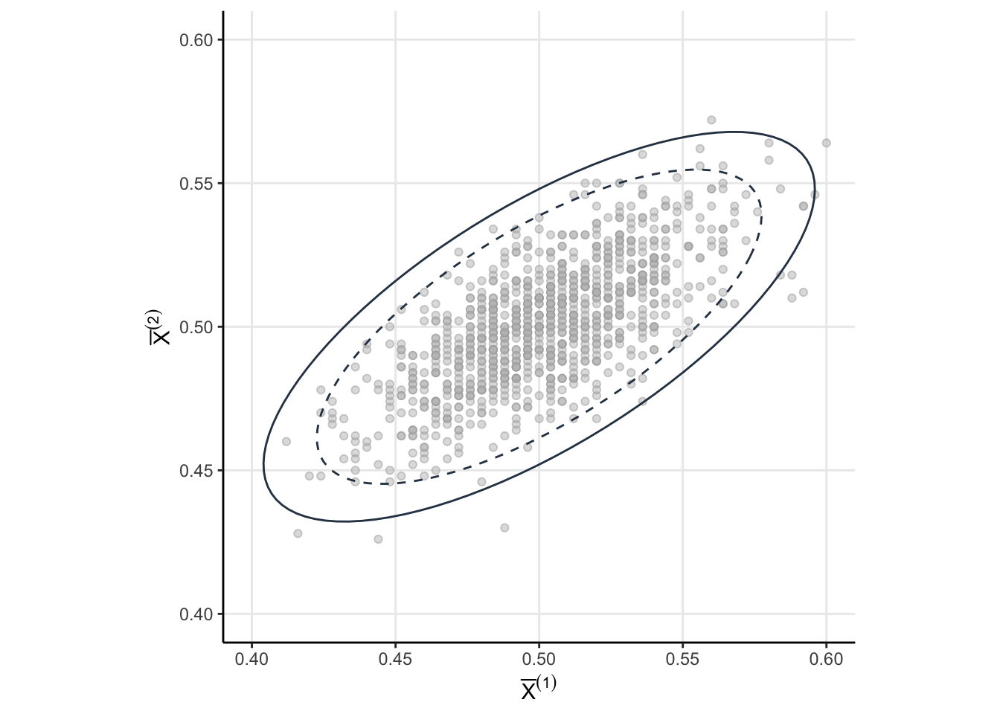
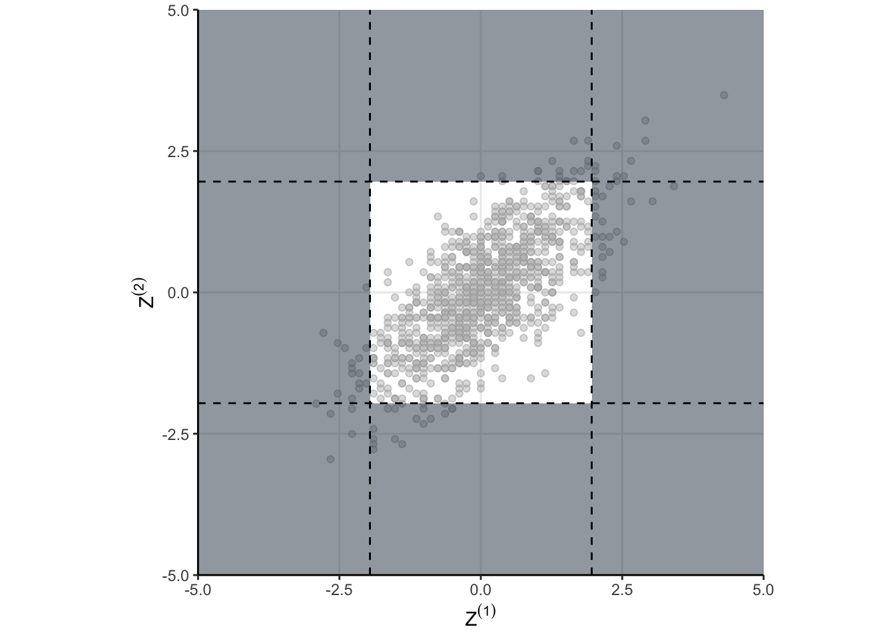

library(tidyverse)
set.seed(0)
# Simulation Parameters
p<- 0.5
n<- 250
nsims <- as.integer((1/0.01)^2)
# Run the simulation
sims<-rerun(nsims, {
# K=1
x1 <- rbinom(1, n, p)
# K=2, accumulating data from each state
x2 <- x1 + rbinom(1, n, p)
# Compute some various quntities we will need, like the Z score
K <- str_c('K=',1:2)
X <- c(x1, x2) / ((1:2)*n)
mu <- p
sds <- sqrt(p*(1-p)/(n*1:2))
Z <- (X-p)/sds
reject <- abs(Z)>1.96
tibble(K, X, mu, sds, Z, reject)
}) %>%
bind_rows(.id='sim')
fpr<-sims %>%
group_by(sim) %>%
summarise(result=any(reject)) %>%
summarise(fpr = mean(result)) %>%
pull(fpr)Special thanks to Jacob Fiksel for writing a great blog post which inspired me to write my own.
At Zapier, AB testing kind of has a bad rap. AB testing is perceived as slow – sometimes taking up to a month to complete a single test– with the chance that we don’t get a definitive result (i.e. we fail to reject the null). One of our priorities (and hence my priority) is to find a way to speed up AB testing so we can learn faster.
Peeking is one way to do that. Peeking involves testing the experimental data before the end of the experiment (“peeking” at the results to see if they indicate a change). As you may know from other popular posts on the matter, or from sophomore stats, this can inflate the type one error. That’s a real shame, because peeking is a really attractive way to end an experiment early and save some time. Additionally, people are curious! They want to know how things are going. Fortunately, there are ways to satisfy the urge to peek while preserving the type one error rate.
One way to peek while preserving the type one error rate is through Group Sequential Designs (GSDs). This series of blog posts is intended to delve into some of the theory of GSDs. To me, theoretical understanding – knowing why something works, or at least being able to understand how in principle I could do this myself – is the key to learning. I’m happy to just do this in isolation, but I bet someone else may benefit too.
I’m working mainly from this book, but I don’t anticipate I will discuss the entirety of the book. I really want to know a few key things:
- What is the foundational problem for peeking?
- How can we address that problem (i.e. How can we preserve the type one error when we peek)?
- How else can we speed up experiments (e.g. by declaring an experiment futile)?
- What is the theory underlying each of the above?
Goal For This Post
We know that under “peeking conditions” – just testing the data as they roll in – inflates the type one error rate. In this post, I want to understand why that happens. Like…where is the problem exactly? Where will be our theoretical basis for attacking the problem of controlling the type one error rate?
But first, a little background on GSDs.
Background
The “G” in GSD means that the hypothesis test is performed on groups of observations. Given a maximum number of groups \(K\), the sample size of \(k^{th}\) each group is \(n_k\).
The “S” in GSD means the test is performed sequentially. If after observing the \(k^{th}\) group the test statistic (computed using all the data observed up to that point) is beyond some threshold, then the null is rejected and the experiment is finished. If not, the next group of observations is made and added to the existing data, wherein the process continues until the final group has been observed. If after observing the final group the test statistic does not exceed the threshold, then we fail to reject the null. The process for \(K=2\) is illustrated in Figure 1.
Code
flowchart TD
A[Observe Group k=1] --> B[Perform Test]
B --> C{Data From k=1 \n Significant?}
C -- Yes --> D[Reject Null]
C -- No --> E[Observe Group k=2]
E --> G{Data From k=1 and \n k=2 Significant?}
G -- Yes --> D
G -- No --> H[Fail To Reject Null]flowchart TD
A[Observe Group k=1] --> B[Perform Test]
B --> C{Data From k=1 \n Significant?}
C -- Yes --> D[Reject Null]
C -- No --> E[Observe Group k=2]
E --> G{Data From k=1 and \n k=2 Significant?}
G -- Yes --> D
G -- No --> H[Fail To Reject Null]
Some Math on Means
Means are a fairly standard place to start for a statsitical test, so we will start there too. Let \(X_{k, i}\) be the \(i^{th}\) observation in the \(k^{th}\) group. Then the mean of group \(k\) is
\[ \bar{X}_k = \dfrac{1}{n_k} \sum_{i=1}^{n_{k}} X_{k, i} \]
Since we are accumulating data, let’s write the cumulative mean up to and including group \(k\) as \(\bar{X}^{(k)}\), and let the cumulative standard deviation up to and including group \(k\) be \(\sigma^{(k)}\). We can actually write \(\bar{X}^{(k)}\) in terms of the group means \(\bar{X}_{k}\) using some algebra. Its just a weighted mean of the previous \(\bar{X}_{k}\) weighted by the sample size.
\[ \bar{X}^{(k)} = \dfrac{\sum_{\tilde{k} = 1}^{k^\prime} n_{\tilde{k}} \bar{X}_{\tilde{k}}}{\sum_{\tilde{k} = 1}^{k^\prime} n_{\tilde{k}}} \tag{1}\]
A Simple Example
Remember that our goal is to understand why the type one error rate increases when we peek as data accumulates, as we might do in an AB test. Answering how much is a little easier, so let’s do that first. Let’s do so by analyzing a \(K=2\) GSD where we assume:
- That each group has the same sample size \(n_1 = n_2 = n\).
- That the data we observe are IID bernoulli trials \(X_{k, i} \sim \operatorname{Bernoulli}(p=0.5)\) for \(k=1, 2\) and \(j=1, \dots, n\).
- That our false postie rate \(\alpha = 0.05\)
How Much Does The Type One Inflate?
Let’s just simulate data under the assumptions above. At each stage, let’s test the null that \(H_0: p=0.5\) against \(H_A: p \neq 0.5\) and see how frequently we reject the null. In our simulation, we will assume “peeking” conditions, meaning we’re just going to do a test of proportions at each stage.
From our simulation, we reject the null around 8.6% of the time. That is certainly higher than the nominal 5%, but if we recall our sophomore stats classes, isn’t there a 9.8% (\(1-0.95^2\)) chance we reject the null?
The 8.6% isn’t simulation error. We forgot that \(\bar{X}^{(1)}\) and \(\bar{X}^{(2)}\) are correlated. The correlation between \(\bar{X}^{(1)}\) and \(\bar{X}^{(2)}\) makes intuitive sense. If the sample mean for the first group is small, then the accumulated mean is also likely to be small than if we were to just take a new sample. Let’s take a more detailed look at Equation 1. Note that
\[ \bar{X}^{(2)} = \dfrac{n_1 \bar{X}_1 + n_2\bar{X}_2}{n_1 + n_2} \>.\]
\(\bar{X}^{(1)}\) (which is just \(\bar{X}_1\) ) appears in the expression for \(\bar{X}^{(2)}\). In the extreme case where \(n_2=1\), the stage 2 mean is going to be \(n_1 \bar{X}_1/(n_1+1) + X_{2, 1}/(n_1+1)\). How much could a single observation change the sample mean? It depends on the observation, but also on how big that sample is. The stuff you learned in sophmore stats about type one error inflating like \(1 - (1-\alpha)^k\) assumes the test statistics are independent. So where does the 8.6% come from? To answer that, we need to understand the joint distribution of the \(\bar{X}^{(k)}\).
Why The Type One Inflates
The assumptions we made above allow us to get a little analytic traction. We know that the sampling distribution of \(\bar{X}^{(1)}\) and \(\bar{X}^{(2)}\) are asymptotic normal thanks to the CLT
\[ \bar{X}^{(1)} \sim \operatorname{Normal}\left(p, \dfrac{p(1-p)}{n}\right) \]
\[ \bar{X}^{(2)}\sim \operatorname{Normal}\left( p, \dfrac{p(1-p)}{2 n} \right) \]
Code
my_blue <- rgb(45/250, 62/250, 80/250, 1)
theme_set(theme_classic())
sims %>%
ggplot(aes(X))+
geom_histogram(aes(y=..density..), fill = 'light gray', color = 'black')+
facet_wrap(~K) +
geom_line(aes(y = dnorm(X,
mean = mu,
sd = sds[PANEL])),
color = my_blue,
size = 1)+
theme(
panel.grid.major = element_line()
)+
labs(y='Density',
x = expression(bar(X)^(k)))
Consider the random vector \(\theta = \left(\bar{X}^{(1)}, \bar{X}^{(2)}\right)\). Since each components has a normal marginal then the joint must be multivariate normal
\[ \theta \sim \mathcal{N}(\mathbf{p}, \Sigma) \]
with mean \(\mathbf{p} = (p,p)\) and covariance1
\[ \Sigma= p(1-p)\begin{bmatrix} \dfrac{1}{n_1} & \dfrac{1}{n_1 + n_2} \\ \dfrac{1}{n_1 + n_2} & \dfrac{1}{n_1 + n_2} \end{bmatrix} \]
Code
sigma_1 <- sqrt(qchisq(0.95, 2))
sigma_2 <- sqrt(qchisq(0.99, 2))
sig<- p*(1-p) * matrix(c(1/n, 1/(2*n), 1/(2*n), 1/(2*n) ), nrow = 2)
tt <- seq(0, 1, 0.01)
x <- cos(2*pi*tt)
y <- sin(2*pi*tt)
R <- cbind(x,y)
e = eigen(sig)
V = sqrt(diag(e$values))
level_curve_1 <- sigma_1*R %*% (e$vectors %*% V %*% t(e$vectors)) + p
colnames(level_curve_1) <- c("X1", "X2")
level_curve_1 <- as_tibble(level_curve_1)
level_curve_2 <- sigma_2*R %*% (e$vectors %*% V %*% t(e$vectors)) + p
colnames(level_curve_2) <- c("X1", "X2")
level_curve_2 <- as_tibble(level_curve_2)
joint <-sims %>%
select(sim, K, X) %>%
pivot_wider(names_from='K', values_from='X') %>%
rename(X1 = `K=1`, X2=`K=2`) %>%
select(-sim) %>%
sample_n(1000)
joint %>%
ggplot(aes(X1, X2))+
geom_point(color = 'dark gray', fill='gray', alpha = 0.5, shape=21)+
geom_path(data=level_curve_1, aes(X1, X2), color = my_blue, linetype='dashed')+
geom_path(data=level_curve_2, aes(X1, X2), color = my_blue)+
lims(x=c(.4, .6), y=c(.4, .6))+
theme(
panel.grid.major = element_line(),
aspect.ratio = 1
)+
labs(x=expression(bar(X)^(1)),
y=expression(bar(X)^(2)))

Now that we know the joint sampling distribution for our statistics of interest (namely \(\bar{X}^{(1)}\) and \(\bar{X}^{(2)}\)), let’s examine when we would reject the null under “peeking” conditions. For brevity, let’s call \(Z^{(k)}\) the standardized cumulative means. Then we would reject the null under “peeking” conditions if \(\Big\vert Z^{(k)} \Big\vert > 1.96\) for at least one \(k=1, 2\). As a probabilistic statement, we want to know
\[ Pr\left( \Big\vert Z^{(1)} \Big\vert > 1.96 \cup 1.96 < \Big\vert Z^{(2)} \Big\vert \right) \>. \]
Because the joint is multivariate normal, we can compute this probability directly. However, I’m just going to simulate it.
# Standardize the MVN by converting covariance matrix into a correlation matrix
D <- solve(diag(sqrt(diag(sig))))
cormat <- D %*% sig %*% D
Z<- MASS::mvrnorm((1/0.001)^2, rep(0, 2), cormat)
z1 = abs(Z[, 1])>1.96
z2 = abs(Z[, 2])>1.96
fpr <- mean(z1|z2)and we get something like 8.3%. But that doesn’t answer why, that just means I did my algebra correctly. As always, a visualization might help. take a look at Figure 3. The shaded regions show the areas where the null would be rejected. These are the areas we would make a false positive. The dots indicate the standardized draws from the density of \(\theta\). Remember, this distribution is the null distribution for our GSD – these are draws from \(\theta\) when \(H_0\) is true. And now here is the important part…
The shaded region depends on critical values we use for each test in the sequence. If we naively use \(Z_{1-\alpha/2}\) as the critical value for each group as in “peeking” conditions, then the shaded region is too big!
Code
sims %>%
select(sim, K, Z) %>%
pivot_wider(names_from='K', values_from='Z') %>%
rename(Z1 = `K=1`, Z2=`K=2`) %>%
select(-sim) %>%
sample_n(1000) %>%
ggplot(aes(Z1, Z2))+
geom_point(color = 'dark gray', fill='gray', alpha = 0.5, shape=21)+
scale_x_continuous(limits = c(-5, 5), expand=c(0,0))+
scale_y_continuous(limits = c(-5, 5), expand=c(0,0))+
annotate("rect", xmin = -5, xmax = -1.96, ymin = -5, ymax = 5, alpha = .5, fill=my_blue)+
annotate("rect", xmin = 1.96, xmax = 5, ymin = -5, ymax = 5, alpha = .5, fill=my_blue)+
annotate("rect", xmin = -1.96, xmax = 1.96, ymin = 1.96, ymax = 5, alpha = .5, fill=my_blue)+
annotate("rect", xmin = -1.96, xmax = 1.96, ymin = -1.96, ymax = -5, alpha = .5, fill=my_blue)+
geom_hline(aes(yintercept=-1.96), linetype='dashed')+
geom_hline(aes(yintercept=1.96), linetype='dashed')+
geom_vline(aes(xintercept=-1.96), linetype='dashed')+
geom_vline(aes(xintercept=1.96), linetype='dashed')+
theme(
panel.grid.major = element_line(),
aspect.ratio = 1
)+
labs(x=expression(Z^(1)),
y=expression(Z^(2)))
find_region <- function(za){
z1 = abs(Z[, 1])>za
z2 = abs(Z[, 2])>za
fpr <- mean(z1|z2)
(fpr - 0.05)^2
}
result<-optimize(find_region, interval=c(0, 3))

That is the why! When we naively just run our test each time we peek, we are defining a region in \(\theta\) space which has too much probability. Peeking is fine, you just have to be careful in defining your rejection region in \(\theta\) space. Defining a better rejection region isn’t too hard, and we can do it using a numerical search. When we do so, we find that using a critical value of 2.18 results in a type one error closer to the desired 5%. However, we’re implicitly restricted ourselves to having the threshold be the same for each group. That doesn’t have to be the case as we will see eventually.
Conclusion
We’ve done algebra, and it wasn’t for nothing. It have us insight into exactly what is going on and why the type one error increases under peeking. We also know that there is a way to fix it, we just need to define the shaded region a little more carefully. This will lead us to talk about alpha spending and various alpha spending functions.
Appendix
Covariance Calculation
The diagonals of the covariance matrix \(\Sigma\) are simply the variances of the marginal distributions.
\[ \Sigma_{1, 1} = \dfrac{p(1-p)}{n_1} \]
\[ \Sigma_{2, 2} = \dfrac{p(1-p)}{n_1 + n_2} \]
What remains is the covariance, which can be obtained with some covariance rules
\[ \begin{align} \operatorname{Cov}\left(\bar{X}^{(1)}, \bar{X}^{(2)}\right) &= \operatorname{Cov}\left(\bar{X}_1, \dfrac{n_1\bar{X}_1 + n_2\bar{X}_2}{n_1 + n_2}\right)\\ &=\dfrac{n_1}{n_1 + n_2}\operatorname{Var}(\bar{X_1}) + \dfrac{n_2}{n_1+n_2}\operatorname{Cov}(\bar{X}_1, \bar{X}_2) \end{align}\]
Since the groups are independent, the sample means are also independent (but the cumlative means are not). Meaning \(\operatorname{Cov}(\bar{X}_1, \bar{X}_2)=0\) so
\[ \operatorname{Cov}\left(\bar{X}^{(1)}, \bar{X}^{(2)}\right) = \dfrac{p(1-p)}{n_1 + n_2} \]
Footnotes
See the Section 6.1 for a calculation↩︎